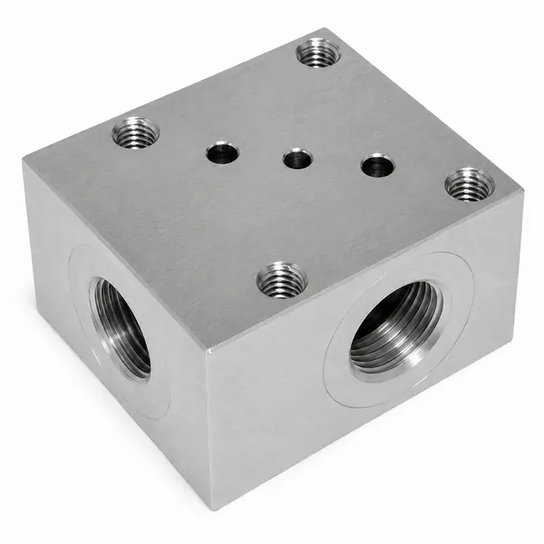
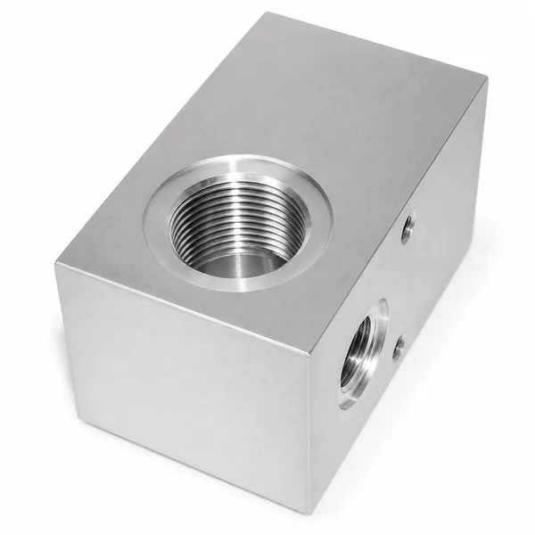
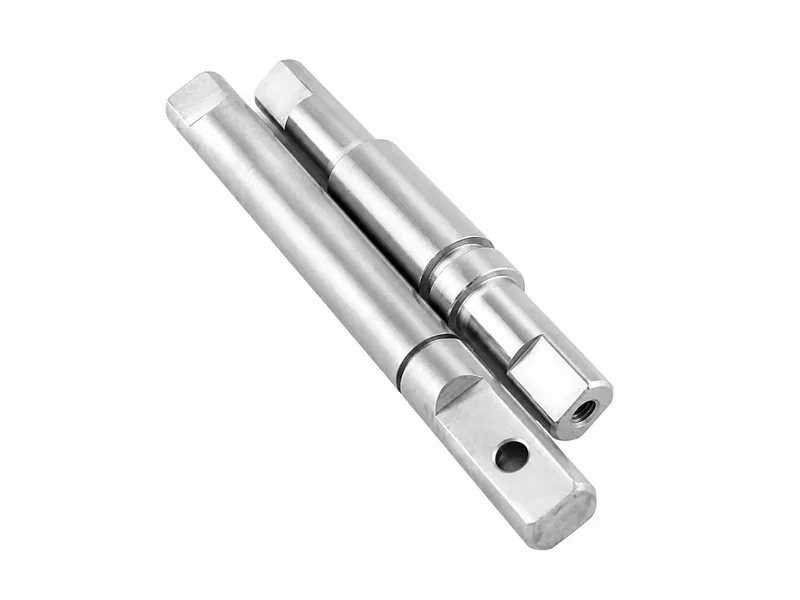
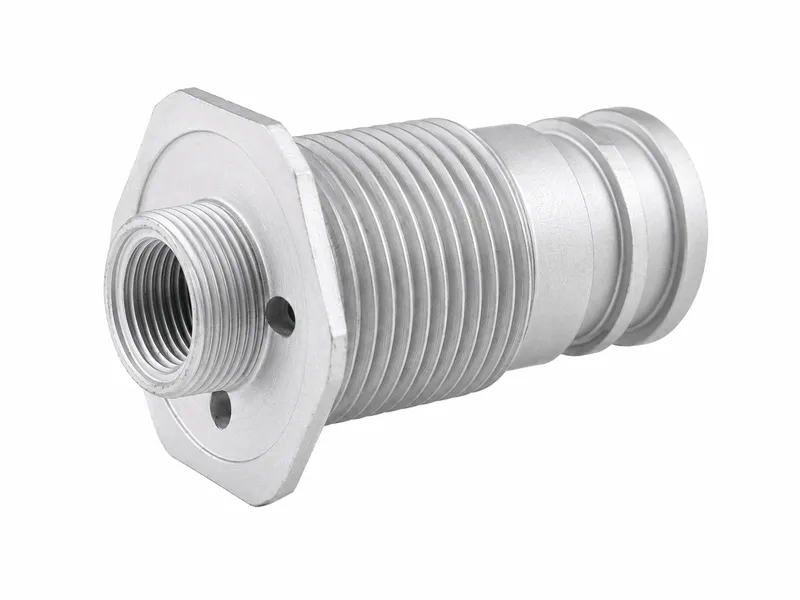

Precision CNC-machined hydraulic valve bodies with spool bores, cartridge cavities, threaded ports, internal oil passages, sealing faces and mounting features, manufactured to customer drawings, 3D models or approved samples.
Wei Xing Machinery provides hydraulic valve machining services for custom valve bodies used in directional, pressure-control, flow-control, check and cartridge valve assemblies. We machine critical bores, cavities, ports, sealing interfaces and internal passages according to customer drawings and agreed inspection requirements.





Wei Xing Machinery provides custom hydraulic valve body machining for directional, pressure-control, flow-control, check and cartridge valve assemblies. We machine valve bores, cartridge cavities, threaded ports, internal oil passages, sealing faces, O-ring grooves and mounting features from customer drawings, 3D models or approved samples.
Machining processes may include CNC milling, drilling, tapping, precision boring, reaming, cavity machining, cross-hole deburring, cleaning and drawing-specified secondary operations. Material, tolerances, surface finish and inspection requirements are reviewed for each project before quotation.
| Product Type | Drawing-specific hydraulic valve bodies for functional bores, cavities, ports, passages, sealing interfaces and mounting features |
|---|---|
| Materials | Carbon steel, stainless steel and aluminum alloy; alloy steel when specified; cast iron or ductile iron when project requirements are defined |
| Manufacturing Process | CNC milling, drilling, tapping, precision boring or reaming, valve spool bore machining, cartridge cavity machining, hydraulic valve port machining, internal oil passage machining, deburring, cleaning and drawing-specified secondary processing |
| Functional Features | Direct spool bores, sleeve and bushing bores, cartridge cavities, poppet seats, threaded ports, cross-drilled passages, sealing lands, O-ring grooves, plug locations and mounting faces when specified |
| Surface Treatment | Material-compatible external finishes such as trivalent zinc plating, zinc-nickel coating, black oxide, phosphating, anodizing, conversion coating, passivation or natural stainless-steel finish, subject to drawing and order requirements |
| Inspection Basis | Critical features are controlled according to the approved drawing, mating components and agreed inspection plan |
| Heat Treatment | Applied only when specified according to material, wear interface, mating component and valve design |
| Component Type | Main Function | Design Focus | Typical Use |
|---|---|---|---|
| Hydraulic Valve Body | Houses or interfaces with moving or sealing valve elements | Spool bores, sleeve fits, poppet seats or cartridge cavities tied to a specific valve assembly | Directional, pressure-control, check, flow-control or cartridge valve assemblies |
| Hydraulic Manifold Block | Integrates passages and mounting interfaces for multiple components | Circuit porting, cavity locations and mounted valve interfaces | Compact hydraulic circuits and mounted valve groups |
| Direct Spool-Bore Valve Body | The spool moves directly in a drawing-specified precision bore | Bore geometry, surface condition and mating spool fit | Valve assemblies designed with direct body-to-spool fit |
| Sleeve-Type Valve Body | A separate sleeve or bushing is installed | Body bore controls sleeve position and retention | Valves using replaceable or fitted sleeves |
| Cartridge Valve Body | A drawing-specified cavity receives a compatible cartridge valve | Cavity form, sealing positions, porting and cartridge data | Cartridge valve assemblies |
| Poppet / Seat Valve Body | Seat geometry and guide features match the specified poppet or seat component | Sealing angle, coaxial relationship and contact position | Check, relief or poppet-type valves |
Valve spool bore machining follows the drawing-defined datum and mating spool requirements.
Body bores support sleeve or bushing location, retention and fit requirements.
Cartridge cavity machining controls the cavity form, port windows and seal locations when specified.
Seat features are machined to match the specified poppet, seat or sealing component.
Hydraulic valve port machining covers drawing-specified threaded and sealing interfaces.
Passages and intersections are machined from defined datums to connect the intended circuits.
Sealing surfaces and grooves are protected or finished according to drawing requirements.
Closure points, bolt patterns and mounting faces are produced to match assembly interfaces.
The actual process route is selected according to the approved drawing and project review; not every order requires every operation.
Confirm material, grade, blank form and drawing notes before machining.
Review datums and operation sequence for bores, cavities, ports, passages and mounting features.
Machine external geometry, mounting faces, port locations and cross-drilled features.
Valve body precision boring and reaming are used for functional bore features when specified.
Machine direct spool bores or sleeve bores according to mating component requirements.
Produce drawing-specified cartridge cavities and related port windows.
Prepare seats, sealing lands and O-ring interfaces for the defined valve design.
Machine threaded hydraulic ports and sealing faces to the specified interface standard.
Create internal oil passages, intersections and closure locations from the approved drawing.
Remove harmful burrs from accessible cross holes and internal intersections based on the agreed inspection plan.
Machine grooves, faces and bolt patterns used for sealing and installation.
Drawing-specified inspection, cleaning and secondary operations are reviewed before quotation.
Material grade, blank form, heat treatment, coating and protected functional surfaces are reviewed according to the drawing, operating environment and mating valve components.
Available material options may include carbon steel, stainless steel, aluminum alloy, alloy steel when specified, and cast iron or ductile iron when project requirements are defined.
Surface finish options may include trivalent zinc plating, zinc-nickel coating, black oxide, phosphating, anodizing, conversion coating, passivation and natural stainless-steel finish, subject to material compatibility and order requirements.
Review material, revision, notes and order requirements before production.
Confirm the datum scheme for functional bores, cavities, ports and sealing faces.
Inspect threads, cavity forms, seal locations and thread depths according to the drawing.
Check functional bores, sealing lands and mounting interfaces based on the agreed inspection plan.
Verify port positions, passage relationships and closure locations.
Review cross holes, blind holes and internal intersections for harmful burrs.
Apply drawing-specified cleaning requirements and protect functional surfaces after cleaning.
Complete final dimensional inspection; mating-component fit review is included only when it is part of the order scope.
Bodies for specific spool, sleeve or actuator-interface designs.
Bodies with drawing-specified poppet, seat, spring, plug and port relationships.
Custom hydraulic valve components with machined cavities and related sealing locations.
OEM hydraulic valve body parts for mobile, industrial and automation equipment.
Latest 2D drawings, 3D models, hydraulic schematics and revision information.
Valve type, intended function and whether the design uses a direct spool bore, sleeve, cartridge cavity or poppet seat.
Spool, sleeve, cartridge, poppet, seat, spring, plug and seal information where applicable.
Material grade, blank form, heat treatment, coating and areas that must remain uncoated.
Functional bores, fits, clearances, surface finish, threads, ports, passages, sealing faces, deburring and cleanliness requirements.
Prototype or production quantity, inspection requirements, testing scope, samples and required documentation.
What is a hydraulic valve body?
A hydraulic valve body is a machined housing that provides bores, cavities, ports, passages, sealing interfaces and mounting features for a specific valve design.
What hydraulic valve body designs can you machine?
We can review drawing-specific direct spool-bore, sleeve-type, cartridge-cavity and poppet or seat valve bodies when mating component data and acceptance criteria are provided.
Which materials are available?
Common options include carbon steel, stainless steel and aluminum alloy. Alloy steel, cast iron or ductile iron can be reviewed when project requirements are defined.
What information is required for quotation?
Please provide current drawings, models, schematics, revision data, mating components, material and finish requirements, critical features, quantities, inspection scope and samples when available.
How are valve bores, ports and internal passages inspected?
Inspection follows the drawing and agreed inspection plan, covering critical bores, cavity features, port positions, passage relationships, sealing interfaces and final dimensions.
How are cross-hole burrs and cleanliness controlled?
Cross-hole deburring and cleaning requirements are reviewed by drawing or order scope, with functional surfaces protected after specified cleaning.
Are hydraulic valve bodies pressure or function tested?
Bare-body inspection confirms machining features only. Pressure, leakage, flow and function testing must be validated on the completed valve assembly when required by the customer design and test plan.
How is a valve body different from a hydraulic manifold block?
A valve body directly houses or interfaces with moving or sealing valve elements; a manifold block primarily integrates passages and mounting interfaces for multiple hydraulic components.
Tell us your requirements and available technical information so we can review the project and prepare a quotation.